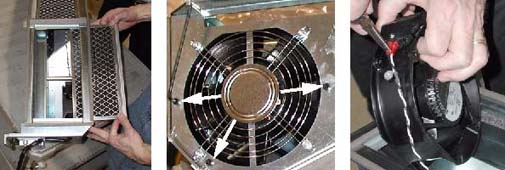

Operating Documentation
Direction 5193755-800, Rev# 8
BrightSpeed (Ltd. Access) Service Methods - Adv
Operating Documentation |
| Required Persons | Preliminary Reqs | Procedure | Finalization |
|---|---|---|---|
| 1 | Timing Not Applicable | Timing Not Applicable |
| Last Revised: | March 16, 2005 |
| Item | Qty | Effectivity | Part# | Manufacturer | |
|---|---|---|---|---|---|
| Standard FE Tool Kit | 1 | - | - | - | |
| Item | Qty | Effectivity | Part# | Manufacturer | |
|---|---|---|---|---|---|
| Fan | 1 | - | - | - | |
| CRUSH HAZARD. | |
| UNEXPECTED GANTRY ROTATION CAN CAUSE SERIOUS INJURY. | |
| Never service the gantry with the axial drive enabled. Use the gantry rotation lock to lock out gantry rotation. See safety menu of Service Document gui for appropriate procedures. |
| Follow ALL required safety and PPE procedures customary for your organization when working on this product. | |
| Condition | Reference | Eff |
|---|---|---|
Only trained service personnel should service the GE CT Scanner. | - | - |
Move the table cradle to the home position, and lower the table to its lowest elevation.
Remove gantry side cover and turn OFF all three (3) service switches.
Remove the rest of the gantry covers.
Position the DAS at 12 O’clock.
| CRUSH HAZARD. | |
| UNEXPECTED GANTRY ROTATION CAN CAUSE SERIOUS INJURY. | |
| Never service the gantry with the axial drive enabled. Use the gantry rotation lock to lock out gantry rotation. See safety menu of Service Document gui for appropriate procedures. |
Lock the gantry in position, using the rotational lock.
Refer to the “Rotational Locking Pin” section of Equipment Service - Gantry (located in the Safety tab of this publication).
Remove the DAS air plenum (see DAS Air Plenum Removal & Installation).
Loosen the thumbscrew that holds the filter above the fan that is to be replaced, and remove the filter from the plenum.
Illustration 1: Remove filter, remove 3 screws, remove push-on connectors

Remove the three (3) 3mm Hex screws and three (3) hex nuts that hold the fan in place.
| NOTE: | It is not necessary to remove the finger guard. |
Remove fan from plenum interior. If the support tube interferes with removal, then remove the bolt that holds the tube in place, and remove the tube.
Unplug the two (2) push-on terminals. Needle-nose pliers can be used for this process.
Connect push-on terminals to new fan, and place fan in plenum with airflow indicator pointing inward. Orient fan so that all three mounting holes align properly.
Reattach fan to plenum, using the three (3) 3mm hex screws and hex nuts. Reinstall support tube, if applicable.
Inspect filter for dirt. Clean with a vacuum (or soap and water), if necessary, and reinstall. Secure the filter with the bracket and thumbscrew.
Reinstall plenum (see MDAS/GDAS Air Plenum Removal & Installation).
When DAS servicing is complete, disengage rotational lock, restore power, and replace gantry covers.
Illustration 2: DAS Air Plenum Assembly

No finalization required.